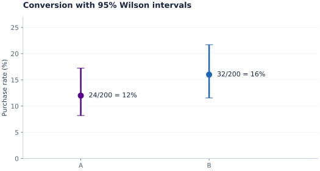
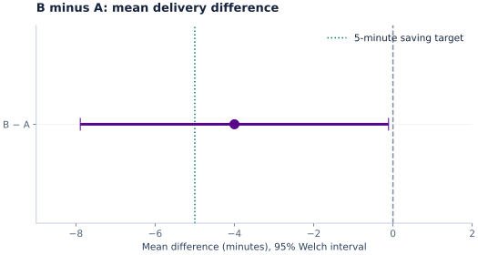
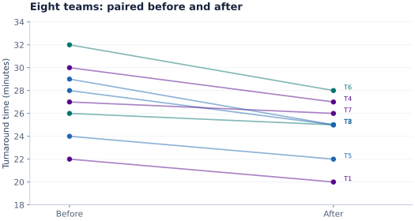
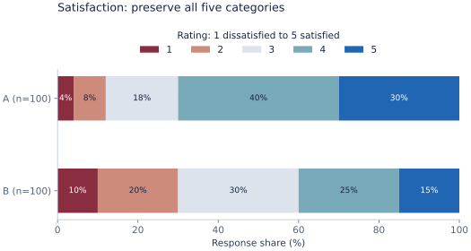
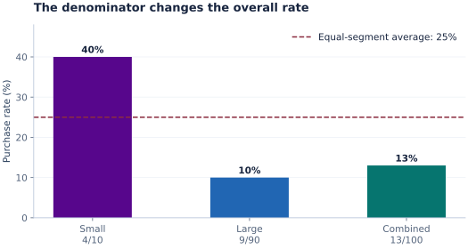
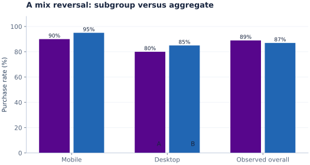
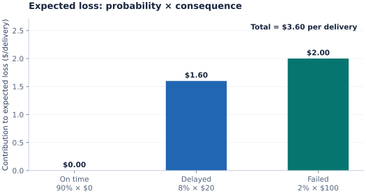
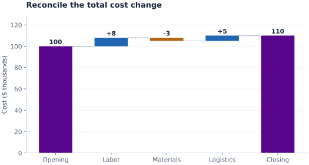

Describe, compare, associate, predict or explain?
Name the population and the quantity you want to estimate. A causal claim needs a defensible design, not a correlation alone.
Understand what a measure contains, choose a defensible analysis, and show the evidence clearly.
Select the predictor and outcome. Then check the observation design. These are candidate methods, not an automatic statistical verdict.
Scale describes meaning. Your question, outcome, estimand, distribution and design complete the decision.
Name the population and the quantity you want to estimate. A causal claim needs a defensible design, not a correlation alone.
One customer, order, visit, store-day or survey response? Aggregating orders to stores changes both the variable and the unit of analysis.
Record level, units, valid categories, allowable range, true zero, and whether values are discrete, bounded or circular.
Independent groups, paired units, repeated observations, clusters and time dependence lead to different standard errors and methods.
Audit missing values, duplicates, denominators, outliers and selection. Inspect distributions and model residuals before trusting inference.
Report effect size, interval, sample/exposure size, practical threshold, key limits and a chart answering the question.
Ask which comparisons survive a legitimate change of labels or units. That is more informative than the column’s storage format.
Labels distinguish categories. No intrinsic ranking is required.
Are these the same kind?
Sales channel: web, store, partner.
Equality and membership; frequencies, proportions and mode.
Bar or dot chart; contingency table for two categories.
Any one-to-one relabeling preserves the information.
A mean of channel codes (1, 2, 3) has no stable meaning.
Values have a meaningful order, but adjacent gaps need not be equal.
Which comes before which?
Satisfaction: very dissatisfied to very satisfied.
Order, median category, quantiles and cumulative percentages. Preserve category labels when reporting the median.
Ordered bars or a diverging stacked bar for survey responses.
Any strictly increasing recoding preserves the order.
A rating of 4 is not demonstrably twice the satisfaction of 2.
Equal increments represent equal differences. Zero is a chosen reference.
How far apart are they?
Temperature in °C; timestamps from a specified epoch.
Differences, arithmetic means and standard deviations, when the numerical model is meaningful.
Histogram, ECDF, box plot or scatterplot; ordered time on a line.
Positive affine transformation: new = a × old + b, with a > 0.
20 °C is not twice as hot as 10 °C. Ratios of differences can be meaningful.
Equal increments and a meaningful zero permit comparisons by ratio.
How many times as much?
Delivery duration in minutes; units sold; mass in kilograms.
Differences and ratios. Mean, median and spread still depend on the question and distribution.
Histogram, ECDF, box plot or scatterplot; counts may use discrete bars.
Positive change of units: new = a × old, with a > 0.
A ratio scale does not imply normal data or justify every statistical test.
Decomposition can mean a construct, KPI formula, additive total, subgroup mix, time-series component or multivariate structure. Keep those meanings distinct.
Service quality → satisfaction item → ordered response → stored code.
A concept is not its column. Define the instrument, wording, scoring and missing-data rules. Recode labels without claiming new measurement precision.
Conversion = purchases / eligible visits; total rate = Σ purchases / Σ eligible visits.
Record eligibility, period, grain, exclusions and repeat visitors. The overall rate is a denominator-weighted average of subgroup rates, not usually their simple average.
Revenue = customers × orders per customer × revenue per order.
This is an accounting identity when all components use compatible populations and periods. It is not proof that any driver caused revenue. Zero denominators and changing definitions can break the calculation.
Revenue = web revenue + store revenue + partner revenue.
Parts must be mutually exclusive and exhaustive. A waterfall can show signed contributions that reconcile to a total; a treemap shows a positive hierarchy.
Overall purchase rate → rate within each device or customer segment.
Compare denominators and segment mix. Aggregated trends may reverse within subgroups (Simpson’s paradox). Keep the original grain and avoid an ecological claim about individuals.
Observed value = trend-cycle + seasonal component + remainder.
An additive decomposition suits roughly constant seasonal magnitude; a multiplicative form suits scale-dependent seasonal magnitude for positive data. Decomposition is descriptive, not causal. Forecasts require separate validation.
Several standardized numerical measures → principal components.
PCA finds variance directions, not automatically a meaningful business construct. Scaling matters; variance explained is not predictive accuracy. Factor analysis has a different latent-variable model.
Velleman & Wilkinson (1993) · Hyndman & Athanasopoulos (2021) · scikit-learn developers (n.d.)
Add support (possible values), geometry, construction and role. Those details often matter more than the interval-versus-ratio distinction.
Nominal; two states
Example: 0/1 purchase flag
The coding mean equals the fraction of 1s. Model an individual event with Bernoulli/logistic methods; report which state is 1.
Method / visual: Proportion with interval; binary model
statsmodels developers (n.d.) · statsmodels developers (n.d.)
Nominal; three or more states
Example: Customer acquisition channel
Use indicator variables with a stated reference category. A numeric code is a label, not a distance.
Method / visual: Counts, cross-tabs, multinomial model
Ordinal; coarse grades
Example: Low, medium, high risk
Preserve order. Report the complete distribution, not only a middle category. An ordinal predictor can use indicators unless a trend score is justified.
Method / visual: Ordered bars, cumulative logit
Ordinal; relative position
Example: Supplier ranked 1st to 10th
Rank 1 may mean best or smallest; document direction and ties. Rankings do not measure the gap in performance.
Method / visual: Spearman/Kendall association
Ordinal; response scale
Example: One 1-to-5 satisfaction question
Numeric labels do not establish equal psychological gaps. Use category frequencies and ordinal/rank methods as a clear starting point.
Method / visual: Diverging bars, ordinal model
Construct requiring validation
Example: Mean of several service questions
A composite is not automatically interval. Check scoring, reverse-coded items, missing-item rules, dimensionality and reliability. If treating it as approximately continuous, explain and compare an ordinal or robust analysis.
Method / visual: Distribution plus sensitivity analysis
Discrete, nonnegative; often ratio
Example: Tickets arriving per hour
Whole events, with a defined observation window. Poisson is a candidate, not guaranteed; inspect overdispersion and excess zeros.
Method / visual: Count bars; Poisson/negative binomial
Continuous ratio in a fixed unit
Example: Transaction amount or waiting duration
Often skewed. Gamma or lognormal models may suit strictly positive data. Zeros require a deliberate alternative; do not add a constant merely to take logs.
Method / visual: Histogram/ECDF; log scale where useful
Numerical difference; zero denotes balance
Example: Net profit or change in minutes
Negative values matter. Do not assume “twice as much” is a useful business interpretation across zero. Ordinary logs cannot represent negatives.
Method / visual: Diverging bars, waterfall, linear model
Successes / known trials
Example: 24 purchases / 200 eligible visits
Retain numerator and denominator. 12% from 20 visits and 12% from 2,000 visits have different precision. Account for repeated visitors or clustering.
Method / visual: Binomial interval/model
statsmodels developers (n.d.) · statsmodels developers (n.d.)
Bounded numerical value
Example: Fraction of each workday spent on analysis
Different from successes out of known trials. Beta regression is a candidate for values strictly between 0 and 1; exact endpoints need an appropriate extension or fractional-response model.
Method / visual: Bounded distribution, beta/fractional model
Numerical value with an exposure unit
Example: Tickets per 100 operating hours
Preserve the exposure and compare like denominators. A count model can use log(exposure) as an offset; a rate is not necessarily bounded by 1.
Method / visual: Rate dot plot with intervals
Timestamp: interval; elapsed time: ratio
Example: Order date versus fulfillment hours
Date differences yield durations after timezone and calendar conventions are defined. Time series may be dependent; a timestamp is not an ID.
Method / visual: Line, seasonal panels, duration ECDF
Circular geometry beyond a linear scale
Example: Arrival hour; wind direction
23:00 and 01:00 are close across midnight. The arithmetic mean is noon, while their circular midpoint is midnight. A circular mean is undefined or unstable when directions cancel.
Method / visual: Circular summaries, polar histogram
Vector of constrained shares
Example: 40% labor, 35% materials, 25% logistics
Shares sum to a fixed total, so components cannot move independently. Use log-ratio methods for inference when appropriate; zeros need explicit treatment.
Method / visual: 100% stacked bars, ternary diagram
Role-specific representations
Example: Order ID, feedback text, latitude
IDs support joins and de-duplication, not average-ID analysis. Text needs documented coding or features. Maps require a spatial question; spatial dependence and projection matter.
Method / visual: Quality checks, coded frequencies, map
Predicting a category from revenue differs from predicting revenue across categories. X describes the predictor; Y describes the outcome. Select a cell to explore the pair.
| Y ↓ / X → | Nominal | Ordinal | Interval | Ratio |
|---|---|---|---|---|
| Nominal | ||||
| Ordinal | ||||
| Interval | ||||
| Ratio |
UCLA OARC (n.d.) · statsmodels developers (n.d.) · statsmodels developers (n.d.) · Velleman & Wilkinson (1993)
Open a card for candidate methods, effect measures, assumptions and visual evidence. Core course connections are separated from optional further study.
Do independent groups have different mean delivery times?
Two groups: Welch t-test is a useful default. Three or more: one-way ANOVA when its variance model fits; Welch ANOVA when group variances differ.
Mean difference in the original units, with a confidence interval. For several groups, specify contrasts and multiplicity control.
Independent observations; influential outliers; sample sizes and sampling model. Small-sample inference needs suitable distributional assumptions. Equal variance is not required by Welch.
Group dots plus box plots; mean and interval plot. A box plot’s whiskers are not a confidence interval.
Course connections: Session 05, Session 06, Session 08
Did the same teams reduce turnaround time?
Paired t-test analyzes within-unit differences. For an appropriate rank alternative, Wilcoxon signed-rank uses the numerical paired differences and a symmetric-difference assumption.
Mean within-unit change and interval; report direction and units.
Pairs must correspond to the same or matched units. Inspect the differences, not only the before and after marginal distributions. For purely ordinal labels, a sign or marginal-homogeneity approach can be more defensible than treating label gaps as numerical.
Paired lines and a distribution of differences.
Course connections: Session 06, Session 08
Do two service groups receive different satisfaction ratings?
Independent groups: Mann-Whitney U (two) or Kruskal-Wallis (three or more). Repeated ordered responses can use Friedman; model the full category distribution when needed.
Rank-based effect or category probabilities; report distributions. These are not automatically tests of medians.
Independence for between-group tests; ties and small-sample inference. A location/median interpretation requires additional distribution-shape conditions. Repeated designs require a matched method.
Ordered proportions, ECDFs, or jittered category points.
Course connections: Session 08
SciPy developers (n.d.) · UCLA OARC (n.d.) · SciPy developers (n.d.) · SciPy developers (n.d.)
Is purchase status associated with sales channel?
Independent contingency table: chi-square independence when expected-count approximation is suitable; Fisher exact or an appropriate exact/Monte Carlo method for sparse tables.
For 2 × 2 tables, risk difference, risk ratio or odds ratio with intervals. For larger tables, Cramér’s V and category-specific proportions.
Use counts, not percentages as observations. Inspect expected counts, sampling scheme and independent units. Matched binary outcomes need McNemar; its informative data are discordant pairs.
Grouped/100% stacked bars, mosaic or table heatmap with clear denominator.
Course connections: Session 06, Session 08, Session 09
How does advertising spend vary with revenue?
Pearson describes linear association of meaningful numerical values. Spearman or Kendall describes ordinal/monotonic association. A binary 0/1 variable with a numerical variable yields point-biserial Pearson correlation.
Correlation and interval where appropriate; describe units and shape, including nonlinear patterns.
Association is not causation. Check outliers, restricted ranges, confounding and independent units. Neither a large sample nor a small p-value resolves these issues.
Scatterplot, with groups shown by color or facets; do not connect unrelated points.
Course connections: Session 09
SciPy developers (n.d.) · UCLA OARC (n.d.) · SciPy developers (n.d.)
How does delivery time relate to order size after adjusting for channel?
Linear regression with numerical predictors and indicator-coded categories; add interactions or flexible terms only when the question and data support them.
Conditional coefficient in outcome units per predictor unit, confidence interval, and validation error for predictions.
Check residual form, unequal variance, dependence, influence and collinearity. Normality concerns residuals for conventional small-sample inference, not a requirement that each predictor be normal. Robust standard errors do not repair a wrong model or clustering unless designed for it.
Scatter/fitted line; effect plot; residual versus fitted, Q-Q and influence plots.
Course connections: Session 10, Session 11
How does customer tenure relate to cancellation probability?
Binary logistic regression for individual events; a binomial model can also retain successes and trial counts.
Predicted probability, probability difference, or odds ratio with interval. Odds ratios are not risk ratios.
Correct coding, separation, sufficient events, calibration and dependence. Encode categorical predictors deliberately; check continuous-predictor functional form on the log-odds scale.
Probability curve and intervals; calibration plot; threshold-specific confusion matrix.
Course connections: Session 09, Session 10, Session 11
How do delivery delays relate to satisfaction categories?
Ordinal logistic regression is a candidate. A proportional-odds model uses common slopes across category thresholds.
Category probabilities and cumulative odds ratios, with a stated direction of ordering.
Assess proportional odds and category sparsity. If this assumption fails, consider a more flexible ordinal model rather than silently ignoring it.
Predicted category-probability curves or ordered stacked probabilities.
Course connections: Session 08, Session 09, Session 10
Which acquisition channel does a customer choose?
Multinomial logistic regression with a reference category; do not impose an invented order.
Predicted probabilities by category; contrasts against the stated reference.
Sparse categories, meaningful reference, calibration, dependence and model-specific assumptions.
Category probability plot; confusion matrix for classification decisions.
Course connections: Session 09, Session 10, Session 11
Which stores receive more support tickets per operating hour?
Poisson count regression with log(exposure) offset for unequal observation windows. Negative binomial is a candidate for overdispersion; hurdle/zero-inflated models need a substantive two-process rationale.
Expected counts or rates and rate ratios, with intervals.
Integer counts; exposure > 0; independence or suitable cluster model; mean-variance relationship and zeros. Negative binomial does not fix dependence by itself.
Discrete count distribution, exposure-adjusted rate plot and model checks.
Course connections: Session 03, Session 04, Session 10, Session 11
How does staffing relate to the share of a workday spent on analysis?
Known successes out of trials: binomial model. Continuous proportions strictly in (0,1): beta regression. Continuous endpoints or other support require an appropriate extension or fractional-response approach.
Predicted fraction, percentage-point difference and intervals; preserve denominators for counted fractions.
Do not equate every percentage with a binomial experiment. Check how it was generated, bounds, endpoint values and repeated units.
Bounded distribution and probability/fraction curves.
Course connections: Session 03, Session 05, Session 10
Cribari-Neto & Zeileis (2010) · statsmodels developers (n.d.)
Will next month’s orders exceed capacity?
Trend/seasonal description; time-series models for forecasting. Longitudinal units may need mixed models or generalized estimating equations. Survival analysis addresses time to an event with censoring.
Forecast plus prediction interval; within-unit effects or survival probabilities for the corresponding design.
Time ordering, regularity, autocorrelation, censoring mechanism and leakage. Validate forecasts using later periods, not a randomly shuffled split.
Time line, seasonal panels, autocorrelation, survival curve or longitudinal small multiples.
Course connections: Session 09, Session 11
Hyndman & Athanasopoulos (2021) · Hyndman & Athanasopoulos (2021) · UCLA OARC (n.d.) · statsmodels developers (n.d.) · statsmodels developers (n.d.)
Is the estimated improvement precise enough for a business decision?
Choose an interval for the estimand and design. Bootstrap can help for suitable statistics; preserve pairing, clustering and time structure when resampling.
Estimate, confidence level, interval, unit, sample size and practical threshold. SD describes observation spread; SE describes estimator precision.
A 95% confidence procedure covers the fixed target in about 95% of repeated samples under its assumptions. A p-value is not the probability the null is true, and nonsignificance does not prove equivalence.
Point-and-interval plot; forecast prediction bands for future observations, clearly labeled.
Course connections: Session 05, Session 06, Session 08
Wasserstein & Lazar (2016) · Altman & Bland (2005) · statsmodels developers (n.d.) · statsmodels developers (n.d.) · NIST/SEMATECH (n.d.)
Can we summarize several metrics or compare expense composition?
PCA for numerical variation; factor analysis for an explicit latent-variable model. Log-ratio methods for compositional shares; circular methods for periodic directions.
Loadings and explained variance; interpretable ratios or directional summaries for the appropriate question.
Scaling, geometry, zeros, validation and business interpretation. Do not apply a linear mean to a circular value or treat constrained shares as independent.
Correlation matrix, PCA biplot, ternary plot or polar histogram.
Course connections: Session 02, Session 09, Session 11
scikit-learn developers (n.d.) · van den Boogaart & Tolosana-Delgado (n.d.) · SciPy developers (n.d.)
Start with what you want the audience to see. Then match the variable combination, uncertainty and design. Small icons are chart schematics; the worked examples below contain labeled numerical evidence.
Bars/dots for counts and summaries; raw distributions and intervals for estimated effects.
Related method familyHistogram/ECDF for numerical values; ordered bars for categories; box + points by group.
Related method familyScatterplot for two numerical measures; cross-tabs for categories; distributions across groups.
Related method familyStacked bars for shares; waterfall for signed contribution; log-ratio methods for constrained vectors.
Related method familyLine or seasonal panels; respect dependence. Chart choice alone does not provide a forecast.
Related method familyPoint-and-interval plots; probability or prediction bands with the interval type named.
Related method familyResidual, Q-Q, influence and calibration views matched to the model family.
Related method familyAbela (2006; updated 2020) · Holtz & Healy (n.d.) · NIST/SEMATECH (n.d.)
Showing 20 chart families
Fits: Category + count or summary
Example: Channels: web 42, store 33, partner 25 orders.
Use a zero baseline for bar length; order categories intentionally. Horizontal bars help long labels.
Fits: Category + numerical summary
Example: Mean delay: web 18, store 12, partner 25 minutes.
Position is easy to compare. Label units; show uncertainty when means are estimates.
Fits: Estimate + lower/upper limits
Example: Conversion estimate 12%, 95% Wilson interval 8.2% to 17.2%.
State confidence versus prediction interval. Overlap alone is not a formal test of a difference.
Fits: Category + numerical observations
Example: Order durations within three channels.
Explain median, quartiles and whisker rule. Outlier flags are review signals, not deletion instructions.
Fits: One numerical variable
Example: Delivery minutes grouped into 5-minute bins.
Bin choice can change the story. Bars touch; for unequal bins use density so area represents proportion.
Fits: One ordered numerical variable
Example: Fraction of orders delivered within each duration.
ECDF = empirical cumulative distribution function. It avoids bin choices and makes percentiles visible.
Fits: Numerical values; optionally categories
Example: The shape of delay distributions by channel.
Smoothing adds assumptions and can hide small samples. Show sample size and points where feasible.
Fits: Two numerical measures
Example: Advertising spend versus revenue by store.
Each point is a unit. Show groups or facets to inspect confounding and outliers.
Fits: Two numerical positions + positive size
Example: Spend, revenue and number of customers.
Size circles by area, not radius; use a legend. A third variable is often clearer in facets.
Fits: Two categories + frequency/proportion
Example: Channel by purchase status.
Heatmap color shows magnitude; a mosaic uses area. State row/column denominator; do not average category codes.
Fits: Ordered response categories + shares
Example: Five satisfaction categories within each channel.
Preserve category order. Separate positive and negative responses around a meaningful center.
Fits: Category + exhaustive shares
Example: 40% labor, 35% materials, 25% logistics.
Shows relative mix, hides total volume. Add totals or a companion chart when size matters.
Fits: Time + nonnegative component totals
Example: Sales by channel over six months.
Useful for total and broad mix. Interior bands lack a common baseline; use small multiples for precise comparisons.
Fits: Ordered signed contributions
Example: Opening 100, web +20, store -10, closing 110.
Contributions must reconcile. Distinguish totals from increments; avoid unexplained accumulation.
Fits: Ordered time + numerical value
Example: Weekly orders across three channels.
Keep time spacing meaningful; show gaps. Many series are clearer in aligned panels.
Fits: Repeating time or direction + value
Example: Demand by hour or month; true wind direction.
Use polar geometry for a genuinely cyclic question. Regular seasonal panels often compare values more clearly.
Fits: Fitted value, residual or quantile
Example: Residuals versus fitted delivery time.
Residual pattern checks form/spread; Q-Q checks tail/distribution behavior. A good-looking plot is not proof of every assumption.
Fits: Positive hierarchy / exactly three shares
Example: Cost hierarchy; three budget shares summing to 100%.
Treemaps trade precise comparison for hierarchy. Ternary positions represent three constrained shares, not three independent axes.
Fits: Spatial location + count, rate or category
Example: Tickets per 100 customer-hours by service area.
Use rates when populations differ; define missing areas and spatial units. A map is for geography, not a decorative substitute for comparison.
Fits: Several numerical or suitably encoded variables
Example: Relationships among spend, revenue, tenure and delay.
Correlation is pairwise; PCA biplots depend on scaling. Neither establishes causation or a validated latent construct.
Holtz & Healy (n.d.) · NIST/SEMATECH (n.d.) · NIST/SEMATECH (n.d.)
All data are synthetic teaching inputs. Calculations show units, steps, results and their practical limits. They are learning examples, not assessment responses or observed business claims.
Did a new page improve conversion?

A: 12.0% (95% Wilson CI 8.2% to 17.2%). B − A: +4.0 points (95% Newcombe CI -2.9 to 10.9 points).
The estimated gain is positive, but the difference interval includes zero. It also spans gains that could matter in practice. This neither establishes an improvement nor proves no effect. Check the predeclared decision threshold, randomization and repeated-visitor rules.
Course connections: Session 04, Session 05, Session 06
statsmodels developers (n.d.) · statsmodels developers (n.d.) · Wasserstein & Lazar (2016)
Are mean delivery times different?

B − A = −4.00 minutes; SE = 1.955; df = 82.13; 95% CI -7.89 to -0.11 minutes; two-sided p = 0.0440.
The interval estimates how much lower B’s population mean might be under the design assumptions. A business target of at least 5 minutes saved is not established by this interval. Do not claim causality from observational channels.
Course connections: Session 05, Session 06, Session 08
Did turnaround time change within teams?

Mean change = −2.50 minutes; 95% CI -3.50 to -1.50; two-sided p = 0.0006.
This small-sample interval relies on a suitable difference distribution and independent teams. The average within-team decrease is clear in these data; a before/after comparison alone does not isolate the intervention from other changes.
Course connections: Session 06, Session 08
How do the response distributions differ?

A has 70% in categories 4 or 5; B has 40%, an observed 30-point difference. The full distribution shows where responses move.
The threshold summary loses detail and is not itself proof of a population effect. Predeclare the threshold if testing it. Use ordinal regression or a rank/distribution comparison for the full outcome; do not infer equal satisfaction gaps from the code numbers.
Course connections: Session 03, Session 08, Session 09
Liddell & Kruschke (2018) · statsmodels developers (n.d.) · SciPy developers (n.d.)
What is the overall purchase rate?

The combined eligible-visit rate is 13%, not 25%.
The simple mean answers “what is the average segment rate with each segment weighted equally?” The weighted rate answers “what fraction of all visits purchased?” They are different estimands. Show segment volumes beside percentages.
Course connections: Session 02, Session 03, Session 09
Which page has the higher conversion rate?

B is higher within each segment, while A is higher in the observed aggregate. The different segment mix explains the reversal.
This synthetic example demonstrates confounding by mix, not proof of a causal page effect. Compare like segments, define the target mix, and use a suitable stratified or adjusted analysis with uncertainty.
Course connections: Session 02, Session 09, Session 10
What is the expected loss of one delivery?

Expected loss is $3.60 per delivery. This is an average over repeated comparable deliveries, not the loss of any one delivery.
Show both probability and consequence: the rare failed delivery contributes $2.00 of the $3.60 expectation. Simulation can explore scenarios but cannot repair incorrect probabilities or loss definitions.
Course connections: Session 04
What contributes to the cost total and its change?

The total grows by $10k (10%). Labor grows by $8k and its share rises by 3.6 percentage points.
Use a waterfall for the signed change and stacked bars for the share mix. Percent change, percentage-point change and contribution to total are different quantities. Shares are linked by the fixed-sum constraint.
Course connections: Session 02, Session 03, Session 13
van den Boogaart & Tolosana-Delgado (n.d.) · Abela (2006; updated 2020)
The design is part of the evidence. No measurement label, chart or software setting guarantees a defensible analysis.
Repeated visits from one customer are not automatically independent visits. Use unit-level aggregation or a model/SE that respects the dependency. Pairing and clustering cannot be fixed by choosing a prettier chart.
Estimand means the population quantity being targeted: mean difference, risk difference, odds ratio, rate ratio, median or category probabilities. Rank tests answer a distribution question unless extra assumptions support a location interpretation.
A paired t-test concerns differences; regression inference concerns errors/residuals under the model. Numerical predictors need not each be normally distributed. Skew, extreme outliers, sample size and design affect robustness.
Missing, not applicable, censored, structural zero and observed zero need distinct rules. Do not convert every blank to zero, and never remove outliers solely to obtain significance.
A chi-square approximation depends on expected cell counts, not simply a large total sample. Use an appropriate exact or simulation-based method if sparse, and retain the sampling design.
Predefine primary comparisons. Control family-wise error or false discoveries for the relevant family, and report the procedure. Looking repeatedly at an A/B result requires a sequential plan; ordinary fixed-horizon p-values are not a stopping rule.
Separate fitting and evaluation at the correct unit and time. Report MAE/RMSE for numerical predictions; calibration and decision-specific errors for probabilities. A high R² on training data is not evidence of deployment performance.
Inspect both rates and denominators by relevant groups, with uncertainty and lawful/ethical use of attributes. An adjusted regression association does not by itself remove unmeasured confounding or establish fairness.
NIST/SEMATECH (n.d.) · Wasserstein & Lazar (2016) · SciPy developers (n.d.) · Hyndman & Athanasopoulos (2021) · UCLA OARC (n.d.)
Aligned with the approved Fall 2026 GC1015-102 course outline. These are curricular connections, not verified slide/page locators or claims about material already taught.
M00 + M01
Define the decision, population, outcome, unit and units.
Explore the guide connectionM01 + M02
Translate KPI → operational definition → variable subtype → chart purpose.
Explore the guide connectionM02
Audit missing values and duplicates; compare center, spread and distributions.
Explore the guide connectionM03
Separate event probabilities, counts and amounts; build conditional risk tables and expected-value scenarios.
Explore the guide connectionM04
Match interval to mean/proportion and design; distinguish SD from SE.
Explore the guide connectionM05
Predefine the outcome, contrast, practical threshold and multiple-testing rule.
Explore the guide connectionM01-M05
Integrate question, grain, data quality, risk and inference. This guide does not change assessment rules.
Explore the guide connectionM06
Use the combination map, then check independence, pairing and numerical support.
Explore the guide connectionM07
Compare scatter/rank/cross-tab evidence; inspect subgroup structure and denominators.
Explore the guide connectionM08
Encode predictors deliberately; state outcome family and conditional interpretation.
Explore the guide connectionM09
Check residuals/calibration, validate on unseen units, and inspect subgroup performance.
Explore the guide connectionM10
Freeze definitions, data versions, analysis choices and an evidence manifest.
Explore the guide connectionM11
Choose one decision-focused visual, quantify uncertainty and explain limitations.
Explore the guide connectionM01-M11
Defend measurement, method, chart and practical recommendation with reproducible evidence.
Explore the guide connectionExtend the foundations when the question needs more structure. Advanced models are optional further learning, with their own assumptions and validation needs.
Nominal × numerical predictors with a numerical outcome: test whether the slope of order size differs by channel using an interaction. Numerical × numerical predictors: show a response surface as a heatmap or contour, with observed-data support. Three categories: stratified tables or faceted proportions are often clearer than a 3D chart.
Two numerical variables plus an ordered category can use a scatterplot faceted by the category. Two categories plus a count can use a table heatmap. Time plus category plus amount can use small-multiple lines. A fourth variable usually belongs in facets or separate panels rather than another visual encoding.
Binning a duration into short/medium/long creates an ordinal variable and loses detail. A z-score is a standardized difference with a chosen zero, not a ratio measure. A log of a positive amount turns multiplicative ratios into additive differences. Standardizing or taking logs does not make a variable normally distributed by definition.
Arithmetic means summarize additive amounts. A geometric mean describes multiplicative factors when values are positive; +10% then −10% multiplies 1.10 × 0.90 = 0.99, a net −1%, even though the arithmetic average return is 0%. Harmonic means suit rates only under the relevant equal-distance/equal-work weighting. Denominator-weighted means are essential for pooled fractions. Coefficient of variation needs a meaningful zero and a stable positive mean.
Mosteller and Tukey’s seven-part scheme distinguishes names, grades, ranks, counted fractions, counts, amounts and balances. Chrisman expands the framework for membership, log intervals, extensive and derived ratios, cyclic values, counts and absolute quantities. These are perspectives on data structure, not an additional automatic test selector. The useful lesson is to inspect support, geometry and how the variable was constructed.
Explore logistic/ordinal/count models, survival, mixed models, time series, compositional analysis and PCA after mastering the course’s descriptive, inferential, association and regression foundations. These links explain a progression, not additional assessed requirements. The approved assessment instructions determine what references and assistance are permitted.
Use explicit tables and units, counts/percentages, descriptive summaries, well-labeled charts and supported tests. Record formulas and the independent/paired choice. Excel does not choose the correct statistical model for you.
Official learning / documentationSet categorical value labels and missing codes deliberately. SPSS “Scale” groups interval and ratio variables; that software label does not remove the distinction. Check the selected procedure’s design and assumptions.
Official learning / documentationSciPy supports descriptive and classical tests; statsmodels supports regression and many outcome families. Match the model to the data-generating process and preserve versions.
Official learning / documentationUse factors and ordered factors deliberately, inspect formula coding, and record the analysis. Base statistics and specialist packages provide methods for many designs.
Official learning / documentationExcel 365 and SPSS are the course tools; Python and R are optional extensions. Software documentation links were checked where accessible. IBM’s documentation endpoint restricted automated web access during research.
Andrew Abela’s supplied 2006 chart asks a valuable first question: what do you want to show? This original guide retains the four purposes and adds time, uncertainty, diagnostics and measurement detail.
Abela’s comparison, relationship, distribution and composition remain useful. This guide adds time, uncertainty and diagnostics so estimation and model checking are visible.
A tiny numerical sample often deserves visible dots. Histograms need informative bins; a smooth density is not a “line histogram,” and more observations do not automatically justify smoothing.
Three variables often fit a scatterplot with color, size or facets. A 3D area chart can hide values through perspective and occlusion; use a heatmap or contour for a numerical response surface when appropriate.
A radar chart for arbitrary categories is not a substitute for analyzing periodic time or direction. Use seasonal panels or circular summaries when the data wrap around.
A 100% stacked chart hides volume; add totals. A pie can communicate a simple few-part whole, but bars are usually easier for precise comparison. Avoid 3D pies and many thin slices.
Marimekko/variable-width columns combine two quantities through area and need clear labels. Bubble size should encode area. Never use decorative perspective or a truncated bar baseline to exaggerate an effect.
Abela (2006; updated 2020) · Holtz & Healy (n.d.) · NIST/SEMATECH (n.d.) · SciPy developers (n.d.)
Make the definition, method, visual and recommendation traceable to the same evidence.
Use the technical term after its meaning is clear.
Checked October 3, 2026. Author-date links support the synthesis. Access notes distinguish full documentation, abstracts and indexed excerpts. Wikipedia supplied orientation, alongside primary and official sources.
Source of the user-supplied chart. This guide uses original diagrams and modern recommendations; it does not reproduce the chart.
Primary Statistics Note reviewed in indexed excerpt
Publisher abstract reviewed; expanded taxonomy cross-checked with Wikipedia, not full paper
Full web documentation reviewed
Local instructor-approved syllabus. All 14 session titles cross-checked. Links in the course map are guide sections, not verified slide or PDF page references. Brightspace provides current operational details.
Full web documentation reviewed
Full web documentation reviewed
Chapter introduction reviewed; further reading for decomposition
Publisher abstract reviewed; not a full-paper methods review
Scale definitions reviewed in indexed primary report excerpt
Primary documentation reviewed
Full web documentation reviewed
Full web documentation reviewed
Full web documentation reviewed
Primary documentation reviewed
Primary documentation reviewed
Primary documentation reviewed
Full web documentation reviewed
Full web documentation reviewed
Full web documentation reviewed
Full web documentation reviewed
Full web documentation reviewed
Full web documentation reviewed
Full web documentation reviewed
Original framework; bibliographic metadata verified through Wikipedia and NIST. Full original article not reviewed.
Full web documentation reviewed
Publisher abstract reviewed; full paper available through university-hosted manuscript
Full web documentation reviewed
Orientation source reviewed in Chrome and web browser. Not the sole authority for method selection.
Full web documentation reviewed
Full web documentation reviewed
Full web documentation reviewed
Primary documentation reviewed
Full web documentation reviewed
Full web documentation reviewed
Full web documentation reviewed
Primary documentation reviewed
Author resource inspected through search index; further reading
The PDF includes all combinations, method cards, worked examples, chart descriptions, session connections, glossary and references.
Download the complete PDF